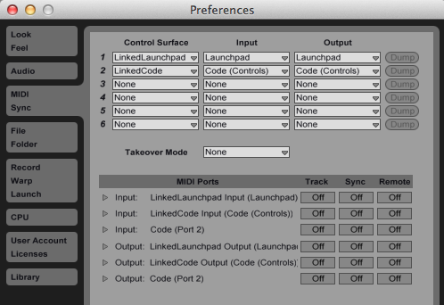
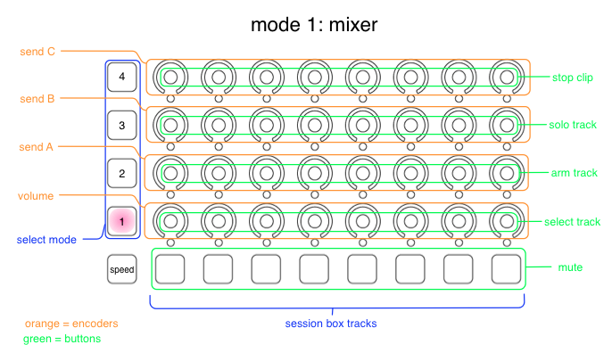
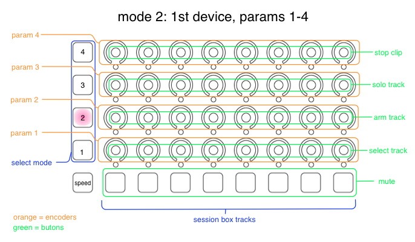
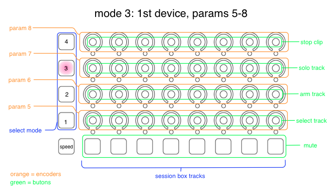
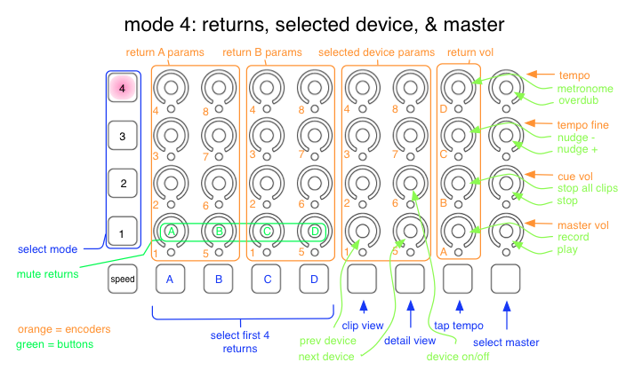

LaunchCode is a set of python scripts which allows the Novation Launchpad and Livid Code controllers to work together in Ableton Live. The Launchpad and Code both use the same session box (the little yellow box in Live's session view), and both address the same eight tracks encompassed by the session box. The idea is to use the Launchpad to launch clips and scenes and the Code to control mixer and device parameters.
Move the folders LinkedCode and LinkedLaunchpad into the MIDIRemoteScripts folder for Ableton Live. On OS X this will be somewhere like /Applications/Live 8.2.6/Live.app/Contents/App-Resources/MIDI Remote Scripts.
Launch Ableton Live.
Open Live's Preferences and go to the MIDISync tab.
Set one control surface to LinkedLaunchpad with input and output set to Launchpad.
Set another control surface to LinkedCode with input and output set to Code (Controls).

Setting up LaunchCode in Live
Using LaunchCode
A single session box appears in Live’s session view, and shows which tracks are currently controlled by the Code and the Launchpad. The Launchpad will function the same as a the default factory functionality. The arrow buttons at the top of the Launchpad are used to move the session box.
The Code has four modes, which are selected with the four buttons on the left of the Code. In the first three modes the eight columns of encoders and buttons are used to control the eight tracks in the session box. The fourth mode is used to control the master track, return tracks, and various transport controls.
The larger lower left button is the speed button. When this button is held the encoders operate at higher speed.
Mode 1
Mode 1 is selected with the bottom left-side button, and controls mixer parameters for the tracks in the session box. Each column of encoders and buttons corresponds to one track. For each track:
The bottom row of square buttons control muting and unmuting of tracks.
The first (bottom) row of encoders control track volumes.
The next three rows of encoders control sends A, B, and C.
The first row of buttons (used by pushing the encoder) selects the track.
The second row of buttons arm tracks for recording.
The third row of buttons are used to solo tracks.
The fourth row of buttons stop clips in each track.

Mode 2
The encoders in Mode 2 are used to control the first four parameters of the first device in each track. The buttons are the same as in Mode 1.

Mode 3
The encoders in Mode 3 are used to control parameters 5-8 of the first device in each track. The buttons are the same as in Mode 1.

Mode 4
Mode 4 does is not based on the session box. It is used to control various master track, return track, and transport controls.
The first four square buttons along the bottom of the Code are used to select returns A through D. The next two buttons select the clip view and open the detail view. The seventh button is ‘tap tempo’, and the last button selects the master track.
The first four buttons on the bottom row of knobs are used to mute/unmute returns A through D.
The first eight encoders on the left (see diagram below) control the first eight parameters of the first device on return A, and the second eight encoders control the first eight parameters of the first device on return B. The idea is to use returns A and B for the effects you wish to change most frequently.
The third set of eight encoders are used to control the parameters of whatever device is currently selected. This is useful for changing parameters on the master track or other return tracks. The bottom two buttons in this zone allow you to select the previous or next device in a chain, and right button in the next row turns devices on/ off.
The second-to-last column of encoders control the volume of returns A through D.
The last column of encoders control (from bottom to top): master volume, cue volume, fine control of tempo, and gross control of tempo. (WARNING: this control is not relative. Moving it will make Live jump tempo suddenly.)
The last eight push-buttons are used to control the following transport controls: play, stop, record, stop, stop all clips, nudge +/-, overdub, and metronome on/off. See diagram for details.

Known issues
When you open a new set in Live you must reload the scripts for both the Launchpad and Code. Open Live preferences and set both control surfaces to none, and then set them to LinkedLaunchPad and LinkedCode.